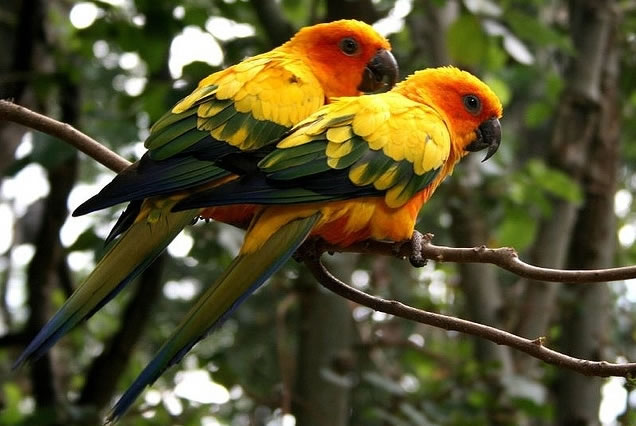

สัตว์ปีก
สัตว์ปีก หรือ นก (รวมถึง ไก่, เป็ด, ห่าน, ไก่ฟ้า) จัดอยู่ในไฟลัมสัตว์มีแกนสันหลัง ชั้น Aves (คำว่า Aves เป็นภาษาละติน หมายถึง นก) โดยมีลักษณะทั่วไปคือ เป็นสัตว์ทวิบาท เลือดอุ่น ออกลูกเป็นไข่ รยางค์คู่หน้าเปลี่ยนแปลงไปเป็นปีก มีขนนก และมีกระดูกที่กลวงเบา
